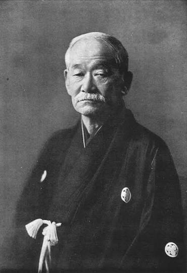

About Jigoro Kano & Judo History
Jigoro Kano developed Judo by synthesizing traditional Jujutsu styles into a safe, modern discipline centered on physical education and character development. In 1882, he established the Kodokan Institute in Tokyo with just nine students. Judo quickly gained prestige due to its effective combat techniques and strong ethical philosophy. Today, it is practiced worldwide by millions of martial artists across every continent.

Judo is the teaching for efficient use of energy, both mental and physical.
— Jigoro Kano, Founder of Judo
Historical Timeline
- 1882: Jigoro Kano founded the Kodokan Judo Institute.
- 1964: Judo was added to the Olympic Games in Tokyo.
- 1980: The first Women's World Judo Championships took place.
- 2012: Olympic Judo expanded with global participation records.
Key Judo Facts
- The traditional practice uniform is called a Judogi (Gi).
- Contests take place on padded mats called Tatami.
- An automatic win in showdown is called an Ippon/Full point (opponent falls on his back).
- Half point is called a Wazari (opponent falls on his side).
- Judo was the first martial art added to the official Olympic Games program.
Judo Video Stream
Embedded video: Judo Technique Highlights
Read official rules on the International Judo Federation website.
Judo Belt Grading System
| Rank Category | Belt Color | Japanese Term | Min. Training Time |
|---|---|---|---|
| 6th Kyū | White Belt | Rokkyū | Beginner |
| 5th Kyū | Yellow Belt | Gokyū | 3 Months |
| 4th Kyū | Orange Belt | Yonkyū | 6 Months |
| 3rd Kyū | Green Belt | Sankyū | 9 Months |
| 1st Dan | Black Belt | Shodan | 3–5 Years |